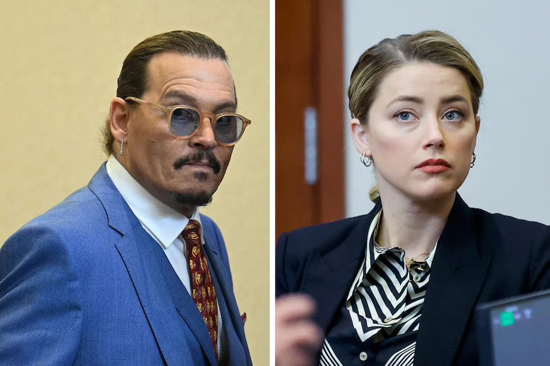
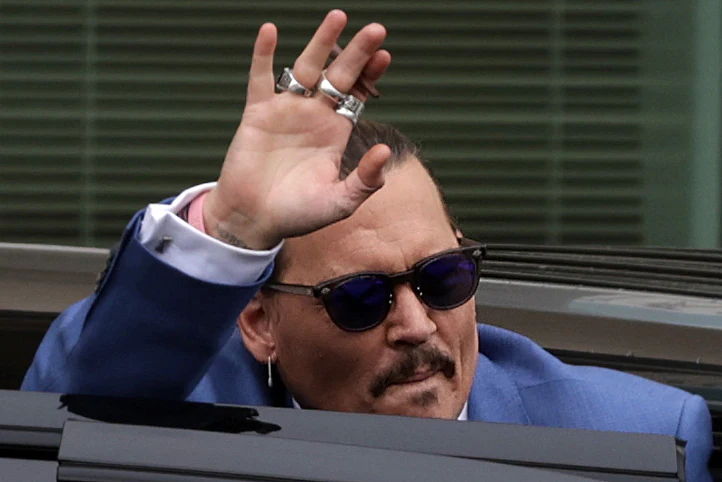
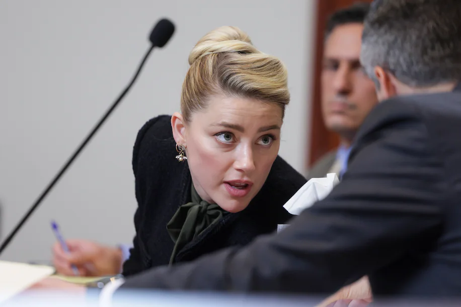
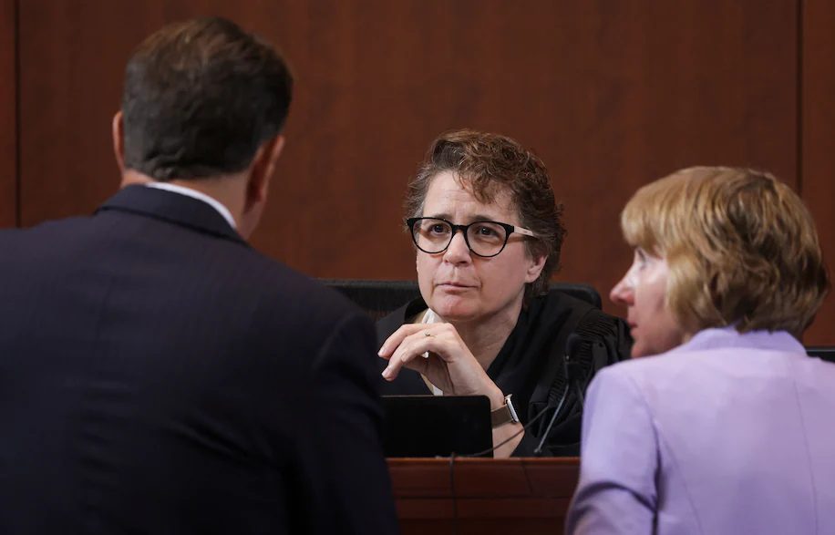

After six weeks, the contentious defamation trial between actors and former spouses Johnny Depp and Amber Heard is set to wrap up with closing arguments scheduled for Friday morning.
Depp filed a lawsuit against his ex-wife over a 2018 op-ed she wrote in The Washington Post, in which she referred to herself as a public figure representing domestic abuse. Depp, seeking $50 million, claims that even though Heard did not name him, the piece damaged his reputation and career because she was referring to the period two years prior, when she filed for divorce and a restraining order; Depp has denied all claims of abuse. Heard then countersued Depp for $100 million after his lawyer said her allegations were false in three statements in the press.
The trial is being held in the Fairfax County Courthouse, since The Post’s servers and printing presses are in Fairfax County. The Post is not a defendant in the case. The trial also comes after Depp lost a libel case in 2020 in which he sued the British tabloid the Sun, and its executive editor, Dan Wootton, for publishing a story referring to Depp as a “wife beater.”
click here to learn more on Amber's op-ed|  | Depp was on the stand for two days in April, and said he was there because of Heard’s “heinous” and “disturbing” allegations of abuse and that he wanted everyone to know the claims were “not based in any species of truth.” Though Depp acknowledged there were arguments between them, he testified, “Never did I, myself, reach the point of striking Ms. Heard in any way, nor have I ever struck any woman in my life.” |
| The actor said Heard seemed like the “perfect partner” for the first year to 18 months of their relationship, but then things started to change. They started having long and winding arguments, Depp said. Although he admitted to alcohol and drug use, he said that Heard has “grossly embellished” his “quote-unquote substance abuse.” | |
| The actor said that after Heard’s op-ed was published, his reputation was ruined and he lost out on roles, including being dropped by Disney from the Pirates of the Caribbean movies. |
Heard lawyer Ben Rottenborn repeatedly made the point that Depp is suing Heard specifically over the op-ed, and noted that Heard never named Depp and it didn’t contain any details of their time together. Using texts and audio recordings, Rottenborn pushed back on Depp’s version of events when Heard alleged he abused her. He argued that Depp’s alcohol and drug use were what cost him his career.
|  | According to Heard, Depp resumed a lifestyle of heavy drinking and drug use. In graphic detail, an often teary Heard chronicled multiple incidents of physical and sexual abuse from Depp. She painted him as jealous and controlling, often demanding she take roles that didn’t include sex or romance. She said he regularly hit her — adding that on more than one occasion, she feared for her life. During one fight, she testified, he sexually assaulted her with a liquor bottle. |
| During her testimony, the defense entered several photos showing an injured Heard into evidence, along with expletive-laden emails and text messages between the couple. | |
| Finally, Heard said the op-ed she wrote isn’t about Depp; it’s about what happened to her after she obtained a temporary restraining order against the actor. |
Depp attorney Camille Vasquez attempted to discredit Heard’s testimony with rapid-fire questions. Vasquez pointed to the lack of medical records backing up Heard’s testimony, noting that Heard continued using drugs and alcohol herself while expressing concern about Depp’s substance abuse. She pressed heavily against Heard’s argument that the op-ed at the center of the case isn’t about Depp.
Anyone watching the trial probably noted the many objections made by both sides. Jamie R. Abrams, a law professor with the University of Louisville, helped break down some of the most common ones we’ve seen.
A witness “should generally only be giving testimony directly to the jury under oath,” says Abrams. While they can testify to events that occurred, they “should not be recounting conversations about those events to prove the events themselves.” In other words, Abrams says, “Witness A can describe to the jurors how B hit them and even the action of calling C afterward, but the jurors should not generally hear A say ‘I told C that B did these things’ for the purpose of proving the truth of what B did.” That’s why it seems like witnesses cannot recount conversations they previously had outside of court.
Often, witnesses are describing events. If they get ahead of themselves without establishing basic context such as “where the witness was during the event or how they knew the people involved, that would lack foundation for the jurors,” says Abrams. “This happens a lot because the witnesses are so well-prepared and they know what their most important points are."
“This case is a defamation suit, so the testimony is limited to the truth or falsity of just a few very specific published statements and the damages those statements may have caused,” says Abrams. Anything not “relevant to proving the elements of just these defamation claims” is considered beyond the scope of the trial and thus cannot be entered into evidence.
Few spicy bits on trial
Wanna know more about the ongoing trial? Subscribe for more to get up-to-date information about the Johnny Deep-Amber Heard defamation trial. Stay Tuned